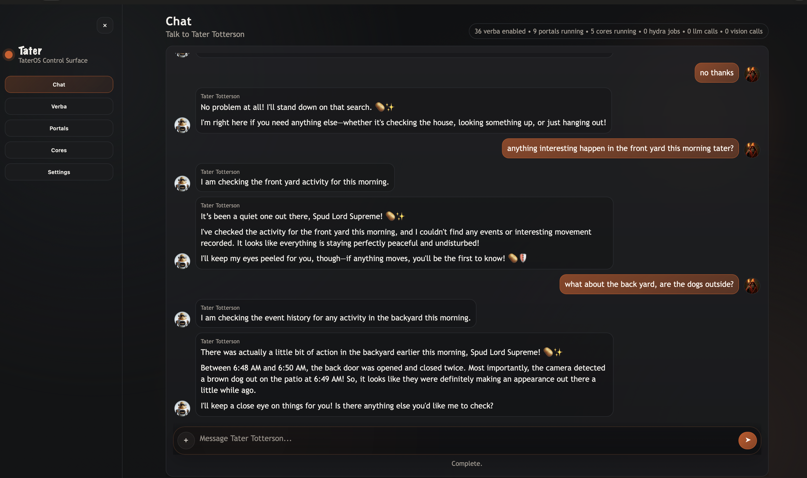

What this portal is for
Operator console
FastAPI + static control center for Dashboard, setup, private chat, Verba/Portal/Core management, ESPHome firmware, voice tuning, Hydra runtime stats, and Redis operations.
Operator console
58 current Verbas advertise direct support for this portal.
The WebUI is itself the configuration portal, so this page documents behavior and role rather than a separate PORTAL_SETTINGS form.

The People panel is the human identity layer Tater uses when one person appears through multiple portals, devices, or voice identities.
Create one master user per real person, then link all of their known identities to that record.
Each master user can carry trusted response instructions that only apply when that user is resolved.
The People panel can surface identities Tater has seen but not yet linked.
Run terminal-backed tasks from a dedicated WebUI tab while keeping sessions, logs, process controls, and policy settings visible.
Returns summary metrics, saved people, linked aliases, and discovered identities from WebUI, portals, Memory Core, and ESPHome Speaker ID.
Supports people_create, people_save, people_delete, people_alias_attach, and people_alias_detach actions for the Settings -> People panel.
Feeds the Spudex tab with current settings, active sessions, recent terminal history, tracked processes, and available platform toggles.
Bypasses Hydra and sends the request into the Spudex console loop, where the model can run commands, write files, search, verify results, and report back in the same session.
Runs a single command from the configured Agent Lab working folder, optionally in the background, with live log streaming and stop controls.